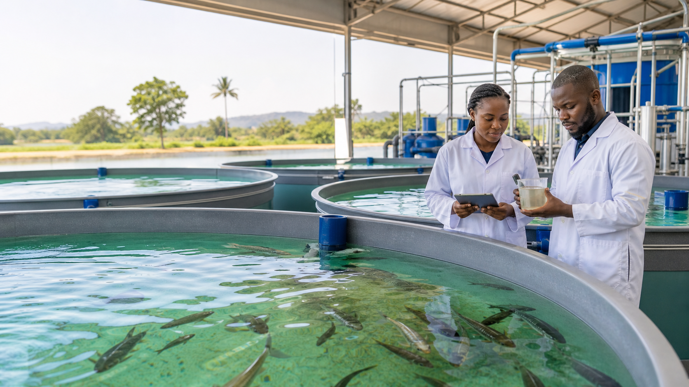

Cast Zone, Angwagede, Jiwokyi, Abuja
Our farm and hatchery location

Fingerlings & juveniles from our modern RAS hatchery in Cast Zone, Angwagede, Jiwokyi, Abuja.
Now taking reservations
Reserve quality catfish fingerlings and juveniles from our modern hatchery in Cast Zone, Angwagede, Jiwokyi, Abuja.
Welcome to NokeyFarm Limited
NokeyFarm Limited is an aquaculture company based in Cast Zone, Angwagede, Jiwokyi, Abuja. We produce healthy fingerlings, strong juveniles, fresh table-size fish, and premium smoked fish for customers across Nigeria.
Our hatchery and grow-out operations use modern Recirculating Aquaculture System technology to support cleaner water, better fish health, responsible production, and reliable year-round farm management.
Cast Zone, Angwagede, Jiwokyi, Abuja
Our farm and hatchery location
Modern RAS
Recirculating Aquaculture System technology for controlled, efficient fish production
300,000 fish per production cycle
Our hatchery's planned production capacity
Simple process
You do not need to know every technical detail before contacting us. Tell us what you need and our team will guide you.
Select the species, size, and estimated quantity you need.
Share your name, phone number, state, and preferred collection method.
Our team contacts you about availability, pricing, pickup, or delivery.
RAS-supported production helps us maintain controlled, hygienic conditions.
Customers can arrange collection directly from the farm.
Scheduled delivery is available where safe fish handling allows.
Stock Reservation & Priority Customer List
Reserve fingerlings or juveniles from an available or upcoming batch, join our priority list for future availability, or request guidance before deciding. Registration is free.
From observation to understanding
Real farm experiences. Real problems. Practical lessons.
Water Quality
NokeyFarm’s first-hand account of a serious nitrite spike in a newly commissioned RAS, the role of salt and fresh water, the source-water treatment problems that complicated the response, and how the biofilter eventually matured.
NokeyFarm Team · 8 min read
Power & Energy
A practical look at why continuous power is a biological requirement in RAS and how NokeyFarm evaluates solar, battery storage and generator backup around real farm loads.
NokeyFarm Team · 1 min read
Water Quality
How NokeyFarm approached acidic source water by testing the borehole, evaluating treatment stages and focusing on pH, alkalinity and iron before the water reached the hatchery.
NokeyFarm Team · 1 min read